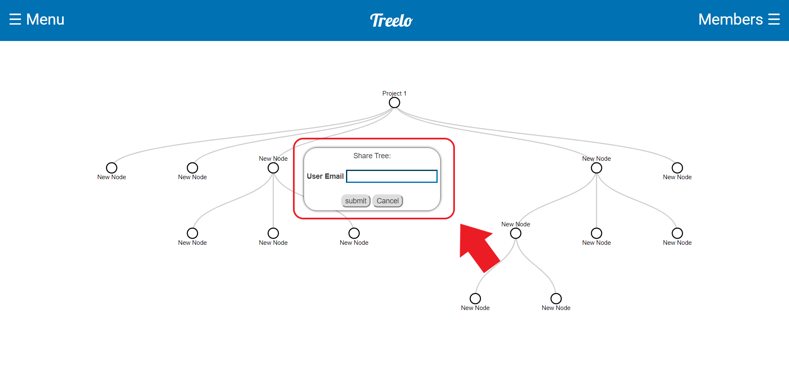

Welome to Treelo, the tree based organizational software!
Getting started:
- Navigation:
- The Treelo page has three main and important components: the Tree View,
Navigation Sidebar, the
Members Sidebar, and the Context Menu.
- Tree View: The Tree View is the main focus of the Treelo page. It displays
each tree you
have
created one tree at a time.

- Tree Navigation Sidebar: The Navigation Sidebar can be opened by clicking the Treelo Menu button shown below. This sidebar will have buttons corresponding to all of the trees you have created or have access to edit/view. It also contains the options to logout, create a new tree, and view this quickstart guide.
- Members Sidebar: You can open the members sidebar clicking the Members button as shown below. The members sidebar contains all of the shared views for the current tree that you are viewing. Simply put, this means that when you share any portion of a tree with an individual, a button will appear here which, when clicked, will show you what view the person that you shared with can see.
- Context Menu: The Context Menu is not present until a node within a tree is
right-clicked. This action
opens
the menu and from there, there are many options. These include adding a card, deleting a
card,
sharing a tree, and setting a card as the focus node. This will be detailed later in this
guide.

- Tree View: The Tree View is the main focus of the Treelo page. It displays
each tree you
have
created one tree at a time.
- The Treelo page has three main and important components: the Tree View,
Navigation Sidebar, the
Members Sidebar, and the Context Menu.
- Functionaility:
- Creating your first tree:
- If you are new to Treelo, the first step is to create a tree. To do so navigate to the Treelo Tree Navigation Bar and click the 'Create New Tree' button located at the top of the sidebar as shown. This opens a popup for creating a new tree. Fill out the information for both the tree Title and Description and hit Submit. Note: if you do not fill out both the title and description fields, the tree will not be created. To cancel creation of a tree, simply hit the Cancel button.
- Editing Trees:
- Adding Nodes:
- You have many options when it comes to editing your newly created trees. Firstly, you can add nodes by right clicking on the node you wish to add a node from. This will open the Context Menu as described above in the Navigation section of this guide. From here you can click the Add Node button and a new node will be added as the child of the selected node.
- Deleting Nodes:
- To delete a created node/card simply open the Context Menu as described above and click the Delete Card button.
- Note: if the node/card that you wish to delete is the root of the tree, the entire tree will be deleted. Also any children of the node you delete will also be deleted.
- Sharing Trees:
- To share a tree from a certain point, simply open the Context Menu and click the SHARE button as shown. This will open the share popup which will prompt you to input the email of the user which you want to share the tree with. Hit Submit to share the tree and Cancel to close the popup. 
- Note: the user that you shared the tree with will only be able to see/edit from the node at which you shared from. They will not have access to higher level parent nodes.
- Setting a Node as the Focus:
- To set a node as the focus, or to make the current node the root node for visual purposes, simply open the Context Menu and click the Set Focus Card? button. This will make the selected node appear to be the root node, thus 'zooming' in on a section of the tree for better, clearer viewing. Note: This will also make a Return From Focus button appear within the Context Menu which will return you to the original tree.
- Editing Node/Card information:
- To edit node/card information simply double click any node. This will open the card
information modal.
- Editing title/description:
- To edit the title or descrition of a node/card simply click on the current description/title and a text area will open. From there you can edit what you wish.
- Removing shared users:
- To remove shared users simply find the Members section within the card information modal. Each member will have an 'x' next to their name to unshare a tree with them, simply click that button as shown.
- Edit Due Date:
- To edit the due date, simply type a valide date and time into the Due Date Section or use your browsers built in calendar as shown.
- Mark Complete/Incomlete:
- To mark a card complete or incomplete, simply click the Incomplete/Mark Complete button as shown. The button will change based on whether a card is marked complete or incomplete.
- Save Changes:
- It is important to note that changes to the title, description, and due date will not be saved unless you click the Save Changes button as shown.

- Editing title/description:
- To edit node/card information simply double click any node. This will open the card
information modal.
- Adding Nodes:
- Creating your first tree:
Still have questions? Email: bgb31@case.edu or tkg11@case.edu for help and support.